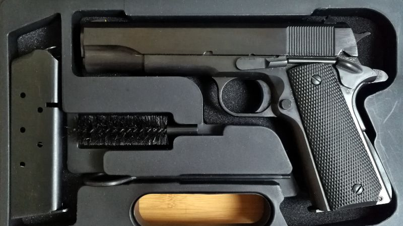

Kupno pierwszego pistoletu to duży wydatek i równie duże przeżycie. Nie poradzę ci, który konkretnie model kupić. Przedstawię jednak kilka ogólnych wskazówek, które na początku wcale nie są oczywiste.
Niezależnie od tego jaką broń wybierzesz, kup nową ze sklepu. Powiedzmy sobie uczciwie: skoro kupujesz pierwszą broń, to jeszcze się na niej nie znasz. Oglądając broń używaną, nie oszacujesz jej sprawności, zużycia, nie wychwycisz objawów dyskwalifikujących dany egzemplarz. Jeśli sprzedawany pistolet ma jakieś nieoczywiste wady, to najprawdopodobniej je przeoczysz. Co prawda nowa broń ze sklepu też bywa różna, ale szansa kłopotów jest jednak zdecydowanie mniejsza.
I żeby nie było, że ja się tutaj jakoś szczególnie nadymam. Sam, po trzech latach mojego strzelectwa nadal uważam, że nie znam się na broni i wciąż nie zdecydowałbym się na zakup używanego pistoletu od obcej osoby. Za duże ryzyko wpadki.
Nie daj się też nabrać na rady internetowych ekspertów od wszystkiego. Oczywiście na forach internetowych czy w mediach społecznościowych bywają osoby o rzetelnej wiedzy i bogatym doświadczeniu, ale to wyjątki. Fakty są takie, że w Polsce broń palna w rękach cywilnych to zjawisko stosunkowo nowe, którego rozkwit trwa ledwie od kilku lat. Siłą rzeczy nie będzie więc wielu osób zorientowanych w temacie znacznie bardziej niż ty sam, bo kiedy mieliby tej wiedzy nabyć? Wszyscy jesteśmy mniej lub bardziej początkujący. To, że ktoś dostał pozwolenie na broń półtora roku przed tobą i popisuje się wiedzą na poziomie Wikipedii (standard na forach internetowych), nie oznacza, że jego opinii można ślepo ufać. Tym bardziej, że jak w każdym hobby wymagającym dużych wydatków na sprzęt, również w strzelectwie każda pliszka swój ogonek chwali: gdy ktoś poleca ci pistolet danej marki, najczęściej oznacza to tylko tyle, że sam go kupił i próbuje racjonalizować swój wybór.
Wchodząc po raz pierwszy do sklepu z bronią, nie graj komandosa, tylko od progu wołaj, że właśnie dostałeś pozwolenie i przyszedłeś kupić pierwszą broń. To żaden wstyd! Dobry sprzedawca wypyta cię o potrzeby oraz oczekiwania, i na tej podstawie będzie w stanie zaproponować ci odpowiedni model. Rzecz jasna mogą zdążyć się Janusze Biznesu, wciskający jakiś szajs zalegający na półkach, ale z mojej praktyki wynika, że stanowią margines, którego raczej nie napotkasz. Sklepów z bronią nie ma dużo, a te które istnieją zwykle prowadzone są przez pasjonatów tematu troszczących się o swoją renomę - myśliwych, sportowców, kolekcjonerów. Prawie na pewno będziesz mógł liczyć na ich fachową pomoc i przydatne wskazówki.
Tak, używany pistolet faktycznie jest tańszy niż nowy, ale różnica ceny nie jest znacząca. Broń palna to nie samochód, nie traci szybko na wartości. Używane egzemplarze w cenie znacznie niższej niż cena sklepowa zwykle są też znacznie starsze. To nie musi oznaczać dużego zużycia, ale jak już ustaliliśmy - na razie nie potrafisz tego rzetelnie ocenić, więc nie ryzykuj. Radzę odłożyć pieniądze na nowy pistolet, nawet jeśli oznaczać to ma opóźnienie zakupów o parę miesięcy.
Oczywiście jeśli nie ma rokowań na rozszerzenie twojego budżetu i z tego powodu zakup nowego pistoletu zupełnie nie wchodzi w grę, to nie masz wyjścia i wówczas kupujesz go z drugiej ręki. Zawsze lepiej mieć starą używaną broń niż nie mieć żadnej. Ale według mnie to ostateczność.
9 mm Parabellum, 9 mm Para, 9 mm NATO, 9x19 - wszystko to określenia jednego i tego samego naboju, który powstał w Niemczech już ponad 100 lat temu. W naszym strzeleckim półświatku najczęściej stosowana jest ostatnia z wymienionych nazw: 9x19.
Jest to najpopularniejsza amunicja pistoletowa, będąca na wyposażeniu wielu armii (standard NATO) i policji. Amunicja 9x19 jest też powszechnie stosowana w sporcie, w strzelectwie dynamicznym. Amunicję 9x19 dostaniesz w każdym sklepie z bronią, w szerokim wyborze rozmaitych wariantów, od wielu różnych producentów. Jakby tego było mało, nabój 9x19 rzadko kosztuje więcej niż 90 groszy, więc na tle innych kalibrów jest bardzo atrakcyjny nie tylko przez swą łatwą dostępność, ale także przez swoją cenę.
Tak wiem, jaka jest ustawowa definicja kalibru. Jednak w mowie potocznej (i w legitymacji posiadacza broni!) pojęcia kalibru i naboju są utożsamiane i powszechnie stosowane zamiennie.
Żeby było jeszcze lepiej, to prawie wszystkie współczesne pistolety zasilane są właśnie nabojami 9x19. Nieliczne wyjątki zwykle i tak mają wariant na naboje 9x19. Sam widzisz, że wobec powyższego, pistolet na naboje 9x19 jest najrozsądniejszym wyborem na początek.
Nie należy mylić amunicji 9x19 z amunicją 9x18 (Makarow). To są różne naboje, których nie można stosować zamiennie!
Amunicja bocznego zapłonu jest śmiesznie tania, same pistolety nią zasilane także nie należą do drogich. Może więc warto zacząć od bocznego zapłonu właśnie? I tak, i nie.
Z jednej strony argument finansowy ciężko odeprzeć, tutaj boczny zapłon ma ogromną przewagę nad bronią centralnego zapłonu, nawet tą na amunicję 9x19. Z drugiej strony, broń bocznego zapłonu odbierana jest (nieco niesłusznie) jako tylko sportowa, czy też rekreacyjna; energia pocisku jest niewielka, odrzut znikomy, broń nie hałasuje za bardzo przy strzale... Jeśli starałeś się o pozwolenie na broń żeby po prostu mieć swoją broń palną bez jakichś większych ambicji sportowych, to boczny zapłon może cię rozczarować. Ale jeśli poważnie myślisz o strzelaniu sportowym albo masz bardzo ograniczony budżet, to pistolet bocznego zapłonu jako pierwsza broń jest całkiem rozsądnym pomysłem.
Jeśli twój portfel to udźwignie, to zamiast pistoletu, kup sobie... dwa pistolety! Mam na myśli dwa identyczne modele, które różnią się tylko kalibrem. Niech jeden będzie na naboje 9x19, zaś drugi na amunicję bocznego zapłonu .22 LR. Przykładem takiego zestawu jest para czeskich pistoletów CZ P-09 oraz CZ P-09 Kadet. Pierwszy z nich zasilany jest nabojami 9x19, zaś drugi .22 LR, ale poza tym jednym detalem niczym się nie różnią. Mają identyczny kształt, identyczną rękojeść i spust, ważą też podobnie.
Kupno takiej pary pistoletów ma głęboki sens. Przede wszystkim pozwoli ci startować z własną bronią na zawodach strzeleckich w najpopularniejszych konkurencjach pistoletowych: pistolet sportowy oraz pistolet centralnego zapłonu. Co mniej oczywiste, ale równie ważne: oszczędzisz na kosztach amunicji, możesz bowiem trenować z pistoletu w wersji na naboje bocznego zapłonu.
Taki trening jest w praktyce identyczny jak trening z bronią centralnego zapłonu, bo poza odrzutem broni w momencie strzału wszystko inne jest identyczne: postawa strzelecka, oddech, praca palca na spuście, obserwacja przyrządów celowniczych i tarczy. Jednocześnie trening z bronią bocznego zapłonu jest znacznie tańszy, bo amunicja .22 LR kosztuje 1/3 tego co amunicja 9x19.
Szkielet pistoletu może być wykonany z metalu (stali lub duraluminium) albo z plastiku. Plastikowe pistolety są przede wszystkim znacznie tańsze w produkcji, dzięki czemu można oferować je w niższej cenie, a więc potencjalnie sprzedać ich więcej. Przy czym mówię tu raczej o hurtowych kontraktach wojska czy policji, a nie o cywilnym handlu detalicznym. Plastikowe pistolety są też nieco lżejsze niż pistolety wykonane w pełni z metalu. Dorobiono do tego marketingową ideologię, że te sto czy dwieście gramów mniej ma jakieś kolosalne znaczenie, choć przy pełnym magazynku względna różnica masy całości jest pomijalna. Dodatkowo, plastik zwykło się nazywać polimerem, bo słowo to brzmi taktycznie i mniej się kojarzy z tandetą.
Nie obawiaj się o trwałość pistoletu na plastikowym szkielecie. W produkcji broni stosuje się bardzo przyzwoite tworzywa sztuczne o ogromnej wytrzymałości. Nie ustępują one trwałością konstrukcjom metalowym.
Pistolet może mieć kurek, taki jak w rewolwerze; może też zamiast kurka mieć ukryty wewnątrz bijnik. W tym drugim przypadku mówimy o pistolecie bezkurkowym. Każda z konstrukcji ma swoje plusy i minusy. Przyjmuje się, że spust w pistolecie kurkowym działa precyzyjniej niż w pistolecie bez kurka, co pozwala na celniejsze strzelanie. Z kolei pistolet bezkurkowy uchodzi za prostszy konstrukcyjnie i łatwiejszy w obsłudze. Są to jednak dość płynne prawdy ogólne, istnieją od nich wyjątki.
Którą kombinację zatem wybrać? Metal? Polimer? Kurek? Niekurek? Nie ma to najmniejszego znaczenia, przynajmniej dla początkującego. Wybierz taki pistolet, który ci się podoba i wygodnie leży w dłoni. Na tym etapie wszystko inne jest nieistotne. Bez względu na to jakie cechy predysponujące do takiego czy innego zastosowania ma dany pistolet, jeśli nie będzie ci się podobał ani nie będzie wygodny, to szybko się do niego zniechęcisz. Zatem czucie i wiara - jak najbardziej; szkiełko i oko - tym razem nie.
Lepiej nie. I mówię to jako miłośnik rewolwerów, który pozwolenie ma broń wyrobił tylko po to, żeby sobie kupić dwa! Ale polskie realia są niekorzystne dla takich typów jak ja. Rewolwery są względnie drogie i występują w sklepach znacznie rzadziej niż pistolety. Również dedykowane kabury są znacznie trudniej dostępne, że nie wspomnę o częściach zamiennych, których praktycznie nie ma na naszym rynku. Wszystko to wynika z małej popularności rewolwerów w Polsce, a właściwie to w całej Europie. Tu nie Stany Zjednoczone; sklep nie zaryzykuje zapełnienia półek rewolwerami, które będą potem latami czekały na swojego właściciela. Rewolwery są niepopularne, więc nie ma ich w sklepach, więc są niepopularne, bo nie ma ich w sklepach - błędne koło, ale tak to właśnie u nas wygląda.
To samo dotyczy amunicji. Naboje rewolwerowe co prawda dostaniesz w prawie każdym sklepie z bronią, ale ich ceny są wyższe, zaś wybór znacznie mniejszy niż w przypadku typowej amunicji pistoletowej. Ciężkie jest życie polskiego rewolwerowca! Jeśli nie jesteś zdecydowanym miłośnikiem bębenkowych sześciostrzałowców, to raczej skup się na pistoletach, będzie łatwiej i taniej.
Pozwól, że na koniec podzielę się z tobą moim spostrzeżeniem, które uważam za najważniejszy z wniosków płynących z mojej amatorskiej strzeleckiej kariery:
Posiadanie dużej ilości różnej broni jest bardzo przyjemne, ale daleko większą satysfakcję daje postęp wyników na tarczy.
Niezależnie od tego, czy poważnie ćwiczysz strzelectwo sportowe pod okiem profesjonalnego trenera, czy po prostu lubisz sobie rekreacyjnie porąbać z glocka lub kałasza do gongów lub tarcz sylwetkowych, satysfakcja z wyników poprawianych wraz z każdą wizytą na strzelnicy jest niezastąpiona. Warunkiem osiągania dobrych wyników jest regularny trening. Zatem zamiast kupować coraz to nową broń i co wizytę na strzelnicy brać ze sobą inny jej model, lepiej skup się na dwóch lub trzech ulubionych, a oszczędzone na niedoszłych zakupach pieniądze przeznacz na amunicję i treningi.
To jest szczera porada od kogoś, kto postąpił dokładnie odwrotnie, czego teraz żałuje. Nie powtarzaj mojego błędu!